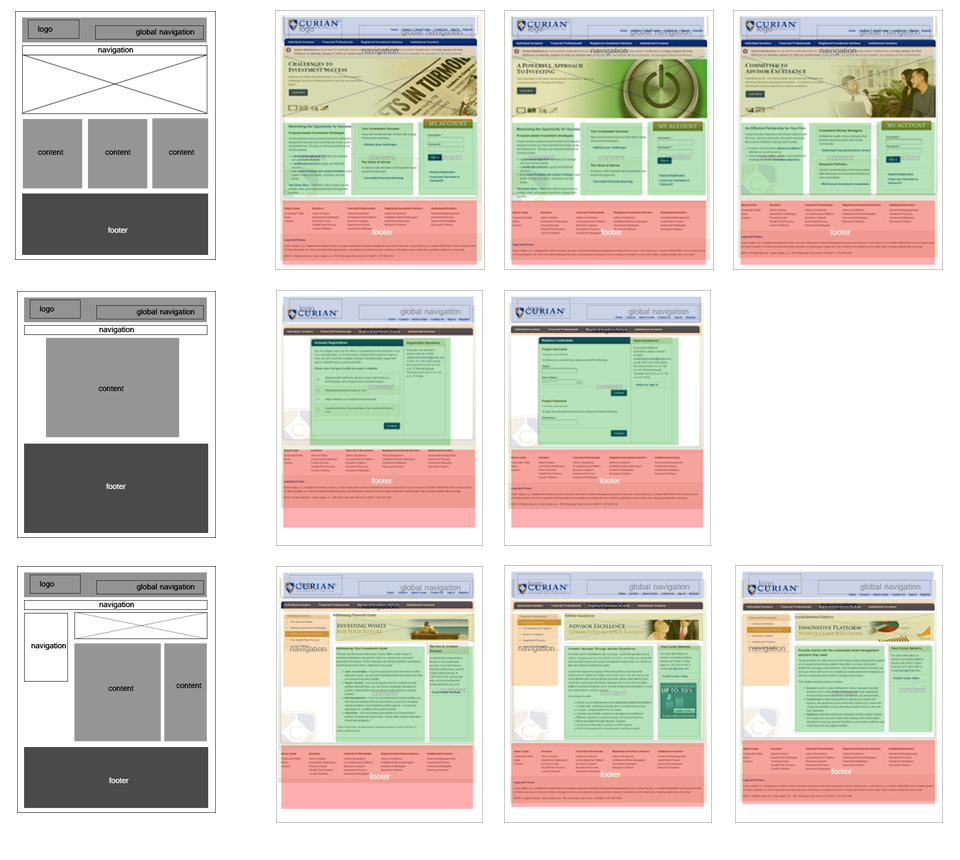
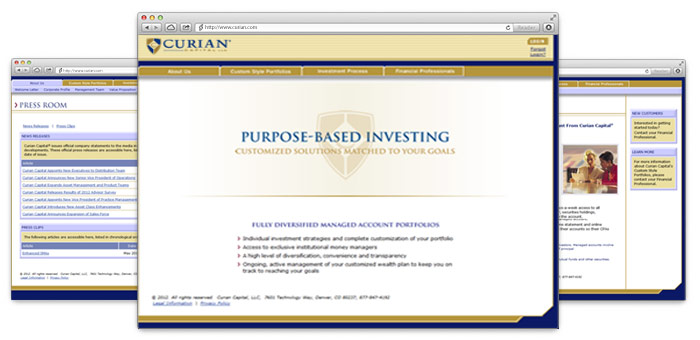
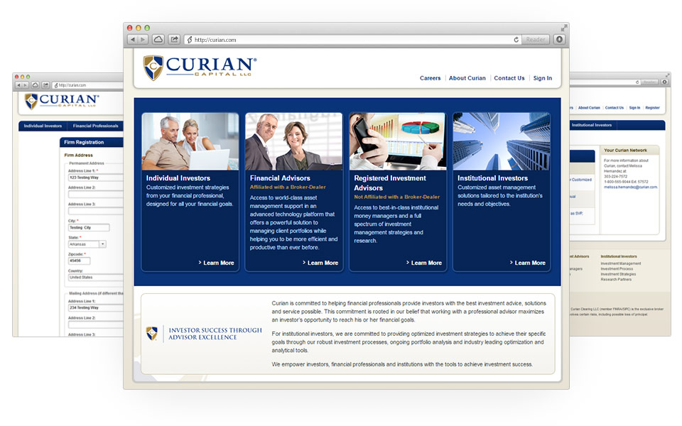

curian.com public reskin project
Visit the live siteCurian Capital, LLC provides customized investment management products and services. In 2012, Curian wanted a public facing reskin as part of a larger, overall branding refresh. From the development side, our team was concerned with writing clean, maintainable code that allows adding new pages/sections easily.
To ensure a consistent experience across all pages, we took a templated approach. Applying a limited number of templates to the content not only allowed our clients to easily visualize the direction of the project, but also made new content additions easier (a task performed by a different group).
After the reskin launch, the client is able to deliver relevant content to the appropriate audiences based on a role selection choice on a user's first visit. Subsequent visits will recognize the role and display designated content.
Content, page titles, and descriptions were crafted to produce organic search results for business related keywords.
Maintenance notifications and validation messages were rethought and consistently implemented to improve the users' experience. This was particularly helpful when signing up new users, as the registration forms are extensive.
The site was well received by our clients and their users (with joyous exclamations of the rotating carousel banners). The reskin reestablished Curian's identity as a leader in asset management.
 Copyright © Ian Gallardo. All rights reserved.